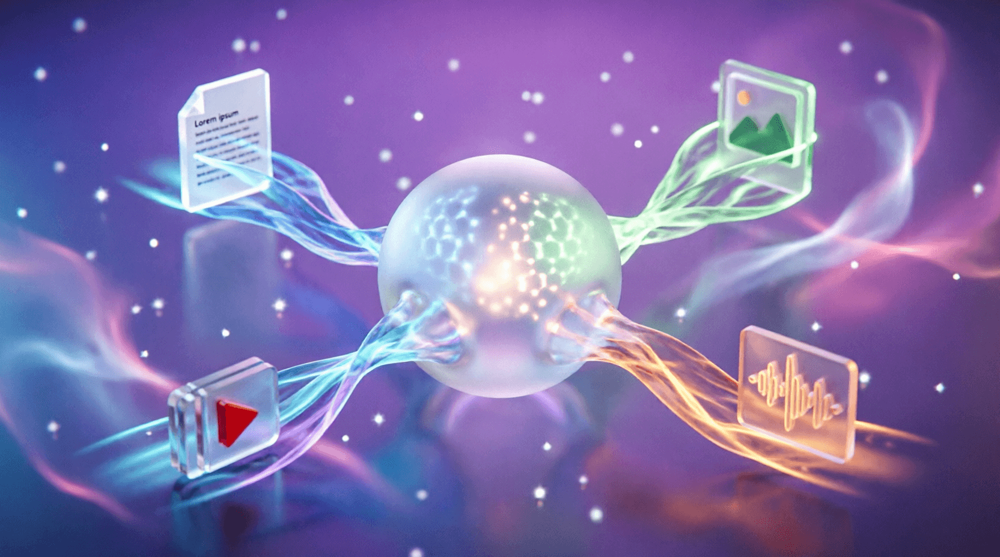

Урок 24: Компиляция моделей
ML-инженер • Блок 5: Низкоуровневая оптимизация и Production
На прошлом уроке мы вручную писали кастомные ядра, чтобы объединять операции. Однако современный стек глубокого обучения предлагает автоматизировать этот процесс. С выходом экосистемы TorchDynamo и TorchInductor инженерам больше не нужно переписывать архитектуры на C++ для достижения максимального быстродействия. Инструмент torch.compile превращает динамический код Python в оптимизированный граф вычислений на лету.
TorchDynamo). Он анализирует граф операций, находит участки для автоматического слияния слоев (Operator Fusion) и передает эту схему компилятору TorchInductor. Индуктор генерирует под этот граф кастомные, сверхбыстрые ядра на языке OpenAI Triton и C++, идеально адаптированные под вашу видеокарту.
Функция компиляции принимает параметр mode, который гибко настраивает баланс между временем компиляции и скоростью инференса:
default: Сбалансированный режим. Оптимизирует граф, не затягивая процесс первой компиляции модели.reduce-overhead: Подавляет накладные расходы со стороны хоста (CPU Python-интерпретатора) с помощью технологии CUDA Graphs. Идеально для небольших моделей, где задержки вызова слоев (overhead) сопоставимы со временем их вычисления на GPU.max-autotune: Самый агрессивный режим. Запускает встроенный бенчмарк, перебирает десятки различных вариантов ядер Triton и выбирает математически быстрейшую конфигурацию под конкретно вашу архитектуру и геометрию памяти чипа. Сильно замедляет первый запуск (до нескольких минут), но выдает максимальный FPS в продакшене.Продемонстрируем, как скомпилировать кастомный блок и измерить прирост скорости инференса.
import torch
import torch.nn as nn
import time
# Создаем типичный тяжелый слой с множеством мелких операций, идеальный для Operator Fusion
class SpeculativeBlock(nn.Module):
def __init__(self, dim=2048):
super().__init__()
self.linear1 = nn.Linear(dim, dim)
self.linear2 = nn.Linear(dim, dim)
self.gelu = nn.GELU()
def forward(self, x):
# Набор последовательных операций, которые без компиляции трижды обращаются к VRAM
a = self.gelu(self.linear1(x))
b = torch.sin(a) + torch.cos(a)
return self.linear2(b) * a
# Инициализируем модель и переводим на GPU
model = SpeculativeBlock().cuda().half() # Используем FP16 точность
mock_input = torch.randn(128, 2048, device='cuda', dtype=torch.float16)
# ---- Вариант 1: Обычный инференс (Eager Mode) ----
# Прогрев GPU (Warmup)
for _ in range(10): _ = model(mock_input)
start_time = time.perf_counter()
for _ in range(100): _ = model(mock_input)
eager_duration = time.perf_counter() - start_time
print(f"Время выполнения в Eager Mode: {eager_duration:.4f} сек")
# ---- Вариант 2: Скомпилированный инференс (Compiled Mode) ----
# Оборачиваем модель в компилятор
compiled_model = torch.compile(model, mode="max-autotune")
# ВАЖНО: Первый запуск будет долгим — идет генерация ядер Triton Индуктором!
_ = compiled_model(mock_input)
# Прогрев скомпилированной модели
for _ in range(10): _ = compiled_model(mock_input)
start_time = time.perf_counter()
for _ in range(100): _ = compiled_model(mock_input)
compiled_duration = time.perf_counter() - start_time
print(f"Время выполнения после torch.compile: {compiled_duration:.4f} сек")
print(f"Ускорение графического конвейера: {eager_duration / compiled_duration:.2f}x")forward присутствуют конструкции, которые компилятор не может перевести в статический граф тензорных операций, происходит «разрыв графа» (Graph Break). К таким конструкциям относятся: вызовы сторонних библиотек (numpy, scipy), логирование через встроенный print() или сложные динамические условия на Python (if/else зависящие от значений элементов внутри тензора). При разрыве графа модель на каждом шаге переключается обратно на медленный интерпретатор Python, полностью уничтожая выигрыш от компиляции.
Используйте встроенную утилиту отладки PyTorch: torch._dynamo.explain(). Передайте в неё вашу кастомную модель из предыдущих блоков, внутри которой намеренно разместите вызов преобразования тензора в массив numpy (x.detach().cpu().numpy()) в середине метода forward. Проанализируйте сгенерированный утилитой текстовый лог. Зафиксируйте количество обнаруженных разрывов графа (Graph Breaks) и опишите инженерный способ устранения этой проблемы.
import torch
import torch.nn as nn
import torch._dynamo as dynamo
class ModelWithBreak(nn.Module):
def __init__(self, dim=512):
super().__init__()
self.linear = nn.Linear(dim, dim)
def forward(self, x):
x = self.linear(x)
# ⚠️ НАМЕРЕННЫЙ РАЗРЫВ ГРАФА:
# Конвертация в numpy ломает статический граф TorchDynamo
# ВАШ КОД: разместите здесь x.detach().cpu().numpy()
return torch.relu(x)
# Создаем модель и тестовый вход
model = ModelWithBreak().cuda()
dummy_input = torch.randn(32, 512, device='cuda')
# Запускаем утилиту объяснения графа
print("=== Анализ графа torch._dynamo.explain() ===")
# dynamo.explain(model)(dummy_input)
# Задача:
# 1. Раскомментируйте вызов dynamo.explain()
# 2. Запустите скрипт и изучите вывод
# 3. Найдите в логе строку "Graph breaks: N"
# 4. Предложите способ устранения разрыва (подсказка: torch ops вместо numpy)import torch
import torch.nn as nn
import torch._dynamo as dynamo
class ModelWithBreak(nn.Module):
def __init__(self, dim=512):
super().__init__()
self.linear = nn.Linear(dim, dim)
def forward(self, x):
x = self.linear(x)
# ❌ РАЗРЫВ ГРАФА (не компилируется):
# numpy_array = x.detach().cpu().numpy()
# condition = numpy_array.mean() > 0
# ✅ ИСПРАВЛЕНИЕ: используем только torch-операции
# Все операции остаются в графе и компилируются
mean_val = x.mean()
condition = mean_val > 0
# Для условной логики используем torch.where вместо if/else
x = torch.where(condition, torch.relu(x), torch.tanh(x))
return x
model = ModelWithBreak().cuda()
dummy_input = torch.randn(32, 512, device='cuda')
# Анализ графа
print("=== Анализ графа ===")
explanation = dynamo.explain(model)(dummy_input)
print(f"Graph breaks detected: {explanation.graph_break_count}")
print(f"Ops captured: {explanation.ops_per_graph}")
# Компиляция и тест
compiled = torch.compile(model, mode="default")
_ = compiled(dummy_input) # Первый запуск (компиляция)
print("✅ Модель успешно скомпилирована без разрывов графа!")Компилятор анализирует инструкции CPython (LOAD_ATTR, CALL_FUNCTION и т.д.) и пытается сопоставить их с тензорными операциями. Когда встречается "непонятная" инструкция — происходит Graph Break.
x.numpy() / x.item() — выход из мира тензоров в обычные Python-объектыprint(x), logging.info() — сайд-эффекты, которые нельзя оптимизироватьif x[0] > 0: — условие, зависящее от значения тензора (а не от его формы)scipy.fft(), cv2.resize() и т.п.nn.Linear(in_features, out_features) внутри forwardnp.sum(x) → x.sum(), np.where → torch.wheretorch._dynamo.allow_in_graph: Для легаси-функций, которые нельзя переписатьtorch._dynamo.explain: Локализуйте разрывы до написания продакшен-кодаПриложение бесплатное. Было и останется.
Если проект помог вам или вашим близким — можете поддержать разработку добровольным переводом.
❤️ Спасибо за поддержку!
Перейти в каталог
